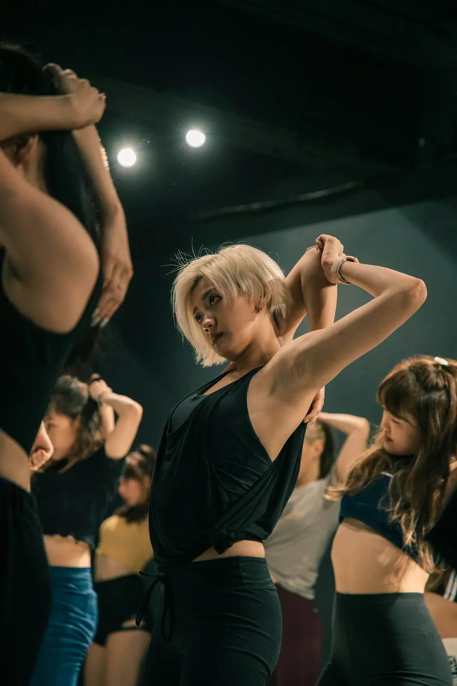
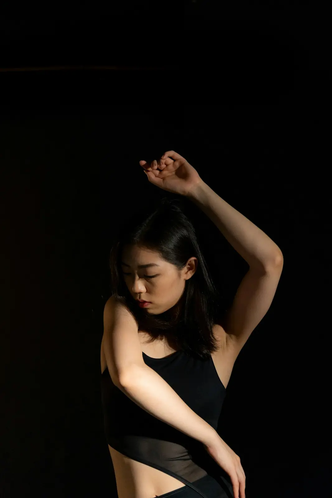
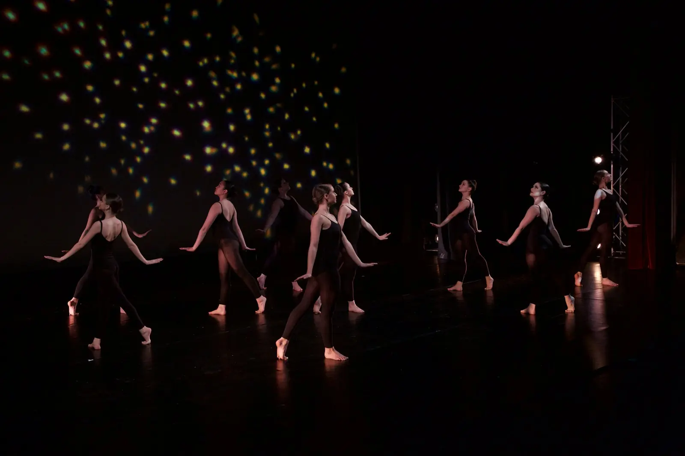
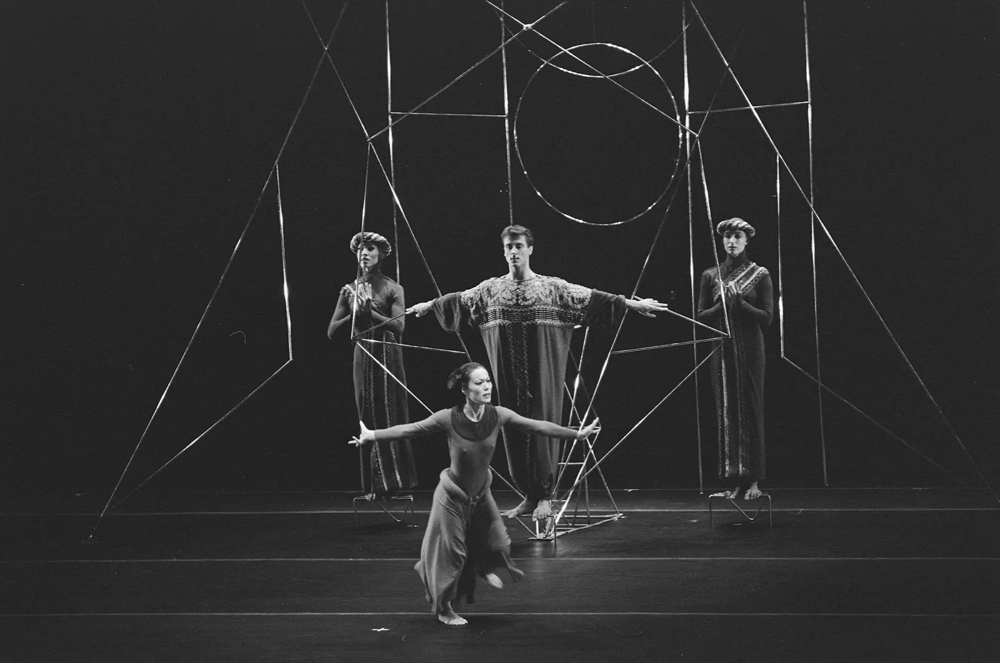

א-בBinary
שני חלקים שונים בתכלית: מהיר ואיטי, יחד ולבד, רצפה ואוויר. הניגוד הוא העניין.

ורבוחרות שיר, סופרות אותו, ורושמות דף ספירות.
רעיון, אימפרוביזציה, משפט ראשון, וריאציות.
מבנה, מערכים, מעברים ורמות.
תזמון, זוויות, הבעה, ואז במה.

שיר טוב לכוריאוגרפיה הוא שיר שאתן שומעות בו הרבה: שכבות, שינויים, רגעים של שקט. לפני שמתחייבות, שומעות אותו עשר פעמים. אם הוא עדיין מרגש בפעם העשירית, הוא מתאים.
מקישים ברגל, מוצאים את ה"אחת" וסופרים בשמיניות. כל ההסבר נמצא בבונה השמיניות.
דף ספירות הוא מפה של השיר. בצד אחד חלקי השיר ומספר השמיניות, בצד השני מה רוקדים ובאיזה מערך. ככה נראה דף ספירות של שיר בקצב 100, באורך שתי דקות וחצי בערך:
| חלק | שמיניות | ספירות | מה קורה |
|---|---|---|---|
| פתיחה | 2 | 1–16 | כניסה מהצדדים לאשכול במרכז, בשקט |
| בית ראשון | 4 | 17–48 | המשפט הראשי, יוניסון, שתי שורות |
| לפני הפזמון | 2 | 49–64 | ריפל לאורך השורה, האנרגיה עולה |
| פזמון | 4 | 65–96 | המוטיב הגדול, מערך וי, כל הקבוצה |
| בית שני | 4 | 97–128 | המשפט הראשי בווריאציה: חצי קבוצה ברצפה |
| לפני הפזמון | 2 | 129–144 | קנון בין שתי קבוצות |
| פזמון | 4 | 145–176 | המוטיב הגדול, מערך מעגל |
| גשר | 4 | 177–208 | סולו בקדמת הבמה, הקבוצה קפואה מאחור |
| פזמון אחרון | 4 | 209–240 | הכול גדול יותר, אלכסון ואז שורה |
| סיום | 1 | 241–248 | תמונה קבוצתית, קפיאה על 8 |

גם קטע בלי סיפור צריך כוונה. לפני הצעד הראשון, כתבו משפט אחד: על מה הקטע, ומה הקהל צריך להרגיש בסופו.
לרוב הכוונה היא "וייב": האנרגיה של השיר, אופי מסוים, סטייל. "קרו של חברות שמשתלטות על הרחוב", "קר ושקט, ואז פיצוץ בפזמון". הכוונה מכתיבה את הלבוש, את ההבעה ואת הטקסטורות.
הכוונה יכולה להיות תמונה ("גל שנשבר"), מילה ("ציפייה"), שאלה ("מה קורה כשמישהי נשארת לבד?") או תחושה. מהכוונה נגזרות המשימות לאימפרוביזציה.
מילים מהשיר: בוחרות שלוש מילים ומתרגמות אותן לתנועה. מקום: רכבת, ים, חדר המתנה. יחסים: אחת מול כולן, שתיים שמתקרבות, קבוצה שמתפרקת.

שמות את השיר, מדליקות מצלמה, ורוקדות בלי לחשוב שלוש פעמים ברצף. אחר כך צופות ובוחרות שתיים או שלוש תנועות שהפתיעו אתכן. זה החומר הגולמי.
מחברות את התנועות לשמינייה אחת עם התחלה ברורה וסוף ברור. לא יותר. שמינייה אחת טובה היא הבסיס לכל הקטע. בבונה השמיניות אפשר לבנות ולשמוע אותה עם ביט.
לוקחות את המשפט ומשנות דבר אחד בכל פעם: גוף, חלל, זמן, אנרגיה. מפרק ארבעת החומרים אתן כבר יודעות איך. חזרה, היפוך, האטה, הגדלה, פירוק וקנון הופכים שמינייה אחת לארבע.
מקשיבות לשכבות: איפה הקיק, איפה הסנר, איפה אפקט מיוחד. על כל מבטא חשוב שמות היט, ובין ההיטים גרוב. תנועות היסוד של הסגנונות, מראנינג מן ועד פוינט, הן אוצר מילים: לא מעתיקות אותן כמו שהן, משלבות ומשנות.
נותנות לעצמכן משימה ומאלתרות אותה דקה: "לזוז רק מהמרפקים", "להתנגד לכוח שמושך אחורה", "להתגלגל בלי להשתמש בידיים". משימה טובה מכריחה את הגוף לצאת מההרגלים.
כשיש כמה משפטים, מחליטים איך לסדר אותם. בשיר עם פזמון, המבנה לרוב נתון. כשבונים בעצמכן, אלה המבנים הקלאסיים:
שני חלקים שונים בתכלית: מהיר ואיטי, יחד ולבד, רצפה ואוויר. הניגוד הוא העניין.
חוזרים בסוף לחלק הראשון, אבל אחרי מה שקרה ב-ב הוא כבר מרגיש אחרת. המבנה הכי נפוץ בכוריאוגרפיה.
חלק אחד חוזר כמו פזמון, ובין החזרות חלקים חדשים. מתאים מאוד לשירי פופ והיפ הופ.
משפט אחד מוצג, ואז חוזר שוב ושוב בשינויים: איטי, הפוך, בקבוצה, ברצפה.
יש התחלה, קונפליקט ופתרון. הדמויות והיחסים בין הרקדניות מובילים את המבנה.
באקומולציה משפט נבנה תנועה אחר תנועה: 1, אחר כך 1-2, אחר כך 1-2-3. בקנון אותו משפט עובר בין רקדניות בהפרש זמן. שניהם כלים מעולים לבנות מתח לקראת שיא. טיפ: את השיא של הקטע ממקמים בערך בשני שלישים ממנו, ולא בסוף. הסוף צריך מקום לנשום.

מערך הוא האופן שבו הרקדניות מסודרות על הבמה. כל מערך מספר משהו:
המעבר בין מערכים הוא חלק מהכוריאוגרפיה, לא הפסקה ממנה. רוקדות בדרך, משתמשות בספירות של המעבר, ומקפידות שהמסלולים לא נחתכים. מעבר של שתי ספירות נראה חד ומרשים, מעבר של שמונה ספירות נותן לקהל לנשום.
באפליקציית העימוד מגדירות מערך לכל קטע ספירות ורואות את המעברים בתנועה, כולל מסלולים. הדפיסו את "דף העימוד" והביאו אותו לחזרה.

קטע שנגמר להמציא עוד לא גמור. עכשיו מנקים: מוודאות שכל תנועה נעשית בדיוק אותו דבר, בכל פעם, אצל כולן.
תזמון: על הספירה, או על ה"וגם"? זוויות: היד באלכסון של 45 מעלות, או ישר למעלה? גובה: כמה עמוק הכריעה? כיוון: לאן פונה הגוף, ולאן המבט? אנרגיה: חד או רך?
שמינייה אחת בכל פעם, לאט, בלי מוזיקה וסופרות בקול. אחר כך עם מוזיקה בחצי מהירות, ורק אז בקצב. מצלמות מלפנים, כמו קהל, ובודקות.
חזרה טובה: חימום, שמיניות חדשות, ניקוי של מה שכבר יש, ריצה מלאה אחת, וסיכום. לפני הופעה, לפחות שלוש ריצות מלאות בתלבושת ובנעליים של הבמה.
הקהל קורא קודם פנים ואז גוף. מתרגלות גם את ההבעה, את הכניסה לבמה ואת היציאה ממנה. ואם משהו משתבש: ממשיכות. הקהל כמעט אף פעם לא יודע.
גוף בגיל ההתבגרות גדל מהר, ועצמות, גידים ושרירים לא תמיד גדלים באותו קצב. ריקוד חכם שומר עליו.